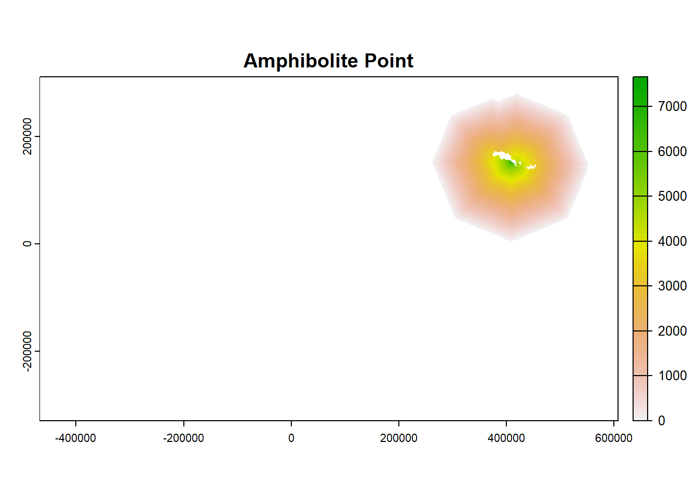

21 Seaward Extension: multiple colonies
This analysis was performed in R version 4.3.2 (2023-10-31 ucrt)
This document was last updated on 2024-02-15
What does this section cover:
- Create a seaward extension raster and polygon for multiple colonies of breeding seabirds
Input data: - csv file containing:
Seabird breeding colony location (latitude and longitude)
Abundance estimate for seabird breeding colony
Global abundance estimate for seabird species
Estimate of appropriate distance travelled from the colony for behaviour of interest (foraging, or behaviours near to the colony such as rafting, bathing, preening, collecting nesting material). This is usually estimate from tracking data for the species collected at different site. [add guidance on how to find this information]
IUCN Red List status
Outputs:
- A polygon of each site that meets IBA criteria
- Metadata needed for the IBA form
21.1 Load required R packages:
If the packages fail to load, you will need to install them. If the install script fails, try downloading a new version of R here: https://cran.rstudio.com/index.html If that fails try installing Rtools.
#If needed remove the "#" and run the code below to install the packages. This only needs to be done once.
#install.packages("sf")
#install.packages("terra")
#install.packages("rnaturalearth")
#install.packages("smoothr")
#install.packages("tidyverse")
#install.packages("stringr")
#Load the libraries. This needs to done every time R is restarted.
library(sf) #for handling spatial points and polygons
library(terra) #for handling rasters
library(smoothr)#for filling holes in polygons
library(rnaturalearth)# rnaturalearth package for geographic basemaps
library(tidyverse) #for plots and data wrangling
library(stringr) #for text edits
#If it shows, the following warning can be ignored:
#The legacy packages maptools, rgdal, and rgeos, underpinning this package
#will retire shortly. Please refer to R-spatial evolution reports on
#https://r-spatial.org/r/2023/05/15/evolution4.html for details.
#This package is now running under evolution status 0
#Support for Spatial objects (`sp`) will be deprecated in {rnaturalearth} and will be removed in a future release of the package. Please use `sf` objects with #{rnaturalearth}. For example: `ne_download(returnclass = 'sf')`21.2 Supply input data
This script imports a polygon of the land directly into R using the rnaturaleath package. This resolution is generally suitable, but if you want to use a different basemap (e.g. high resolution and/or a particular projection), go to appendix # and this script will give an example.
## Colony data: location, abundance estimate
df <- read.csv(paste0(wd,"/data-input-files-bookdown/AdeliePenguin_example_dataset_62.csv"))
head(df)## colony_name colony_size colony_size_min colony_size_max latitude
## 1 Acuna Island 3079 1880 3079 -60.7612
## 2 Ambush Bay 17621 17621 17621 -63.1840
## 3 Amphibolite Point 7660 5000 7660 -60.6840
## 4 Ardley Island 260 260 1331 -62.2130
## 5 Beagle Island 284535 96892 284535 -63.4139
## 6 Cape Bowles 395 60 395 -61.3160
## longitude
## 1 -44.6370
## 2 -55.3930
## 3 -45.3390
## 4 -58.9330
## 5 -54.6675
## 6 -54.0910#[add guidance, bp?]
#Global population size (this is not the real value, just used for the example!)
min_global_estimate <- NA
max_global_estimate <- NA
best_global_estimate <- 10000000 #this can be the mean of min & max if another best estimate is not available using the code below:
#best_global_estimate <- mean(c(min_global_estimate,max_global_estimate))
#where can partner's get the global estimate?
# - we can get data through BirdLife if not available on the red list
#make sure it is mature individuals - not breeding pairs!
#first place to look is red list
#Red List category to know for IBA & KBA criteria
red_list_category <- "LC"
#LC = Least Concern, NT = Near Threatened, VU = Vulnerable,
#EN = Endangered, CR = Critically Endangered
#DD = Deficient (only uses number based thresholds, not %)
#if they are globally threatened, only need 20 mature individuals
#For KBAs, also can assess more criteria
#red_list_codes <- c("A2ace","3bce","4ace")
#[add some images for how to get this from iucnredlist.org]
## Maximum colony radius distance (m)
max_colony_radius <- 149000
## Specified resolution of grid cell (m)
grid_res <- 1000
#[For Marine Toolkit, need to provide guidance on choice of resolution. 5km aligned with same scale as the #Critchley et al. 2018 paper, changed to 1km as failed during the example because the birds could cross diagonally through land]
## Land polygon
#Include the name of the country you wish to import a map for
#To include multiple countries use for example "country = c("Antarctica","Chile")"
land <- ne_countries(scale = "large", returnclass = "sf",
country = "Antarctica") %>% st_make_valid()21.3 Format colony locations as spatial objects
If the colony locations are not projected into an equal areas crs with metres (m) as the unit, this will need to be done before calculating the distance. [add link to page on projections]
#The script requires the spatial data to be projected into an equal areas projection with meters (m) as a unit
#To do this, we create a custom projection centered around the data
basemap <- st_transform(land, crs = paste0("+proj=laea +x_0=0 +y_0=0 +lon_0=",mean(df$longitude),
" +lat_0=",mean(df$latitude)))
dev.off()## null device
## 1plot(basemap[1], main = "Basemap")
#Set coordinate reference system (CRS) for colony locations (example for lat/lon, WGS84)
col_locs <- st_as_sf(df,coords = c("longitude","latitude"), crs = 4326)
#Make sure colony data is projected to the basemap crs
col_locs_proj <- st_transform(col_locs, crs = st_crs(basemap))21.4 Create a background raster
Create a raster (grid) that can be used for delineation of a seaward extension boundary from a colony of breeding seabirds. This raster will: - Have a specified cell size (resolution). - Cover the location of the colony or colonies with a buffer greater than the maximum radius distance. - Specify cells at either marine or terrestrial (ice can be classified as terrestrial).
#First set a buffer (m) around the colony/colonies + the resolution of the grid to make sure the grid is large enough.
raster_buffer <- max_colony_radius + grid_res
#Find the extent of the colony locations
bounds <- st_bbox(col_locs_proj)
#Create the blank raster grid with the crs of the land polygon
ras <- terra::rast(xmin = bounds[[1]] - raster_buffer,
ymin = bounds[[2]] - raster_buffer,
xmax = bounds[[3]] + raster_buffer,
ymax = bounds[[4]] + raster_buffer,
resolution = grid_res,
crs = st_crs(basemap)$wkt)
#Convert the basemap, currently in polygon format, to a raster and then overlay with the blank raster
basemap_vector <- vect(basemap)
mask <- terra::rasterize(basemap_vector, ras)
mask[is.na(mask)] <- 2
mask[mask == 1] <- NA
mask[mask == 2] <- 1
ras <- mask
dev.off()## null device
## 121.5 Calculate distance by sea from the colony per cell
- Calculate distances from the colony to each cell travelling only through marine cells, because the birds are expect to travel around land masses rather than over them to reach marine destinations.
- For each raster, the script will provide a note to say whether the calculation is successful and advice on what to do if it is not. [add info about the distance calc successful messages]
#Create a loop to apply the same method to each colony
for(i in c(1:nrow(df))){
colony <- subset(col_locs_proj,colony_name == df$colony_name[i]);colony
## Extract the cell location of the colony
pp <- terra::extract(ras,vect(colony), cells=TRUE)
## convert that cell to a value of 2
colony_ras <- ras
colony_ras[pp$cell] <- 2
## You now have a raster with colony cell = 2, land cells = NA and sea cells = 1
## Calculate distance from colony via sea, cell values of NA are avoided while determining distance
DistSea <- terra::gridDist(x=colony_ras, # x specifies which raster to use
target=2) # specifies which cell to determine distance from distance
#Add the minimum grid resolution
DistSea <- DistSea + grid_res
#Add colony name to raster
names(DistSea) <- df$colony_name[i]
#Check calculation is successful
if(terra::minmax(DistSea)[2] == 0) print("WARNING: Check for NAs in final output. Your origin(colony) may be to far in land.
Therefore, your origin is completely buffered by omit cells (land cells),
and no distance calculation for cells at sea can be performed") else print(paste(i,
"Distance calculation successful"))
#Save rasters
if(i == 1){
ColonyStack <- DistSea
} else {
ColonyStack <- c(ColonyStack,DistSea)
}
}## [1] "1 Distance calculation successful"
## [1] "2 Distance calculation successful"
## [1] "3 Distance calculation successful"
## [1] "4 Distance calculation successful"
## [1] "5 Distance calculation successful"
## [1] "6 Distance calculation successful"
## [1] "7 Distance calculation successful"
## [1] "8 Distance calculation successful"
## [1] "9 Distance calculation successful"
## [1] "10 Distance calculation successful"
## [1] "11 Distance calculation successful"
## [1] "12 Distance calculation successful"
## [1] "13 Distance calculation successful"
## [1] "14 Distance calculation successful"
## [1] "15 Distance calculation successful"
## [1] "16 Distance calculation successful"
## [1] "17 Distance calculation successful"
## [1] "18 Distance calculation successful"
## [1] "19 Distance calculation successful"
## [1] "20 Distance calculation successful"
## [1] "21 Distance calculation successful"
## [1] "22 Distance calculation successful"
## [1] "23 Distance calculation successful"
## [1] "24 Distance calculation successful"
## [1] "25 Distance calculation successful"
## [1] "26 Distance calculation successful"
## [1] "27 Distance calculation successful"
## [1] "28 Distance calculation successful"
## [1] "29 Distance calculation successful"
## [1] "30 Distance calculation successful"
## [1] "31 Distance calculation successful"
## [1] "32 Distance calculation successful"
## [1] "33 Distance calculation successful"
## [1] "34 Distance calculation successful"
## [1] "35 Distance calculation successful"
## [1] "36 Distance calculation successful"
## [1] "37 Distance calculation successful"
## [1] "38 Distance calculation successful"
## [1] "39 Distance calculation successful"
## [1] "40 Distance calculation successful"
## [1] "41 Distance calculation successful"
## [1] "42 Distance calculation successful"
## [1] "43 Distance calculation successful"
## [1] "44 Distance calculation successful"
## [1] "45 Distance calculation successful"
## [1] "46 Distance calculation successful"
## [1] "47 Distance calculation successful"
## [1] "48 Distance calculation successful"
## [1] "49 Distance calculation successful"
## [1] "50 Distance calculation successful"
## [1] "51 Distance calculation successful"
## [1] "52 Distance calculation successful"
## [1] "53 Distance calculation successful"
## [1] "54 Distance calculation successful"
## [1] "55 Distance calculation successful"
## [1] "56 Distance calculation successful"
## [1] "57 Distance calculation successful"
## [1] "58 Distance calculation successful"
## [1] "59 Distance calculation successful"
## [1] "60 Distance calculation successful"
## [1] "61 Distance calculation successful"
## [1] "62 Distance calculation successful"21.6 Inspect the output distance from colony rasters
- Look at the object and plot examples
## class : SpatRaster
## dimensions : 640, 1075, 62 (nrow, ncol, nlyr)
## resolution : 1000, 1000 (x, y)
## extent : -467720.8558, 607279.1442, -329322.1032, 310677.8968 (xmin, xmax, ymin, ymax)
## coord. ref. : +proj=laea +lat_0=-62.2587353064516 +lon_0=-52.8170365645161 +x_0=0 +y_0=0 +datum=WGS84 +units=m +no_defs
## source(s) : memory
## names : Acuna Island, Ambush Bay, Amphi~Point, Ardle~sland, Beagl~sland, Cape Bowles, ...
## min values : 1000.000, 1000.0000, 1000.000, 1000.000, 1000.0000, 1000.0000, ...
## max values : 1130910.822, 909312.8419, 1099295.598, 1060033.621, 882253.9674, 855354.4725, ...## [1] "62 raster layers"21.7 For each colony, estimate number of birds that use each cell
- Set any cells that are further that the provided maximum distance from the colony to NA
- Normalise to 0 and 1 probability of occurrence instead of distance using a log decay function
- Multiply by colony size
- Save ouputs to another raster stack
- Plot examples
#Loop through colonies
for(i in 1:nrow(df)){
DistSea <- ColonyStack[[i]]
## Set any cell further than maximum distance to NA
DistSea[DistSea > max_colony_radius] <- NA
## Normalise to 0 and 1 probability of occurrence
ProbOccurence <- -1*(DistSea/max_colony_radius)+1
#Apply logarithmic decay function as done in Critchley et al. 2020.
#https://onlinelibrary.wiley.com/doi/full/10.1111/ecog.04653
#Skipping this step will result in a linear decay. Other decay functions could be input here if justified.
ProbOccurenceLog <- ProbOccurence*(1/log(DistSea))
#Rescale to between 0 and 1
ProbOccurenceLog <- ProbOccurenceLog/
max(values(ProbOccurenceLog), na.rm =T)
#Multiply by population size
PopRaster <- ProbOccurenceLog*df$colony_size[i]
#Add colony name to raster
names(PopRaster) <- df$colony_name[i]
#Save rasters
if(i == 1){
ColonyStack_pop <- PopRaster
} else {
ColonyStack_pop <- c(ColonyStack_pop,PopRaster)
}
}
#To plot a particular raster use the index number
plot(ColonyStack_pop[[1]], main = df$colony_name[1])
plot(ColonyStack_pop[[2]], main = df$colony_name[2])
plot(ColonyStack_pop[[3]], main = df$colony_name[3])
plot(ColonyStack_pop[[4]], main = df$colony_name[4]) 
21.8 Overlap the rasters and save raster outputs
- If rasters from multiple colonies overlap, you can combine the rasters
- This means that if two nearby colonies don’t trigger IBA criteria individually, they may do in the areas they overlap
21.9 Calculate IBA raster
- If the species is not Threatened (Red List category of Least Concern, Near Threatened or Vulnerable), filter out cells containing less than 1% of the global population
#turn abundance raster to dataframe. use IBA criteria function
#test each iba criteria cell by cell, record whether meets each critirea (only global)
#Waterbird or seabird?
#Can we use lists from datazone
#Jono will follow up with Ian B
#Sometimes we need to know what red list criteria was applied to applu IBA/KBA sub criteria.
#We can't share the BL database with this info.
#red list api R
#stored:
#Science (W:) > 2 Species data > 2022 Red List datasets > 2022-12 > BL_Population_2022-12
if(red_list_category %in% c("LC","NT","VU")){
#Convert to with more (1) or less (0) than 1% of global population
IBA_raster <- all_sites_raster
IBA_raster[IBA_raster < best_global_estimate/100] <- 0
IBA_raster[IBA_raster >= best_global_estimate/100] <- 1
#plot to check
plot(IBA_raster)
#set to NA cells
IBA_raster[IBA_raster == 0] <- NA
}
#There are other IBA and KBA criteria, you can look these up, but we are not able to include codes to assess all criteria in this toolkit.21.10 Calculate IBA polygon
- Convert to polygon format
- Simplify the polygon to a more usable shape
- Fill in small holes between the land and simplified polygon
- Cut out the area covered by land
- Save the output
#convert raster to a polygon format
IBA_poly_ras <- IBA_raster %>%
terra::as.polygons() %>%
sf::st_as_sf()
#simplify the polygon
IBA_poly <- IBA_poly_ras %>%
sf::st_simplify(dTolerance = 2*res(IBA_raster)[1])
##Make buffer to crop to local part of basemap
max_dist_buffer <- st_buffer(col_locs_proj, dist = max_colony_radius)
land <- basemap %>%
st_crop(st_bbox(max_dist_buffer)) %>%
st_union()
#fill in holes in the polygon, and holes between the coatline and the polygon,
#then trim out the areas covered by land
IBA_poly_trim <- smoothr::fill_holes(IBA_poly, threshold = st_area(IBA_poly)) %>%
st_union(.,land) %>%
smoothr::fill_holes(threshold = st_area(IBA_poly)) %>%
st_difference(land)
#plot the result
ggplot(IBA_poly_trim)+
geom_sf(data = IBA_poly_ras, fill = "lightblue", color = NA)+
geom_sf(data = land, fill = "grey", colour = NA)+
geom_sf(fill = NA, color = "red") 21.11 Split into separate IBA polygons and save metadata
#next task is to split the mulitpolygon into 2 separate polygons
then for each polygon,
min, max
polys_df <-
create column for each criteria and polygon ID number
#Split multipolygon into separate polygons
polys <- st_cast(IBA_poly_trim, to = "POLYGON") #Warning message is ok
#Many polygons?
nrow(polys) #2## [1] 2#for(i in 1:nrow(polys)){
# IBA_poly_single <- polys[i,]
# plot(IBA_poly_single)
#abudance_raster_IBA <- terra::mask(all_sites_raster, IBA_poly_ras_single)
#polys_df$min_abundance[i] <- round(min(values(abudance_raster_IBA),na.rm = T))
#polys_df$max_abundance[i] <- round(max(values(abudance_raster_IBA),na.rm = T))
#record all the criteria met (unique in each cells)
#then 1 row of data per polgyons
#subspecies can be used a regional IBA criteria
#Olivia's current scripts don't use regional pop est. criteria
#Add text to say that we aren't considering regional criteria, but they do exist
#area
#centroid
#species
#numbers are not in a good order
#would be good to order north to south or clockwise, or left to right
#add the polygon number to the plot
#}#plot the final polygon with foraging radius approach
#colony <- subset(col_locs_proj,colony_name == df$colony_name[i]);colony
#max_dist_buffer <- st_buffer(col_locs_proj, dist = max_colony_radius) %>%
# st_union()
#plot the result
#ggplot(IBA_poly_trim)+
# geom_sf(data = land, fill = "grey", colour = NA)+
# geom_sf(fill = "#fcba0350", color = "red")
#ggplot(max_dist_buffer)+
# geom_sf(fill = NA, col = "blue")+
# geom_sf(data = IBA_poly_trim, fill = "#fcba0350", col = "red")+
# geom_sf(data = land, fill = "grey", color = NA) +
# ggtitle("All colonies")
#add metadata to the polygon before saving
#add metadata to the plot
#if different cells meet different criteria, we can draw a polygon around the entire area
#Jono removed polygons that are less than 1 cell large - but for this we will not drop any polygons - instead add guidance that they should.
#site_name <- "Spindrift Rocks Seaward Extension"
#plot the result
#ggplot(IBA_poly_trim)+
# geom_sf(data = land, fill = "grey", colour = NA)+
# geom_sf(fill = "#fcba0350", color = "red") +
# ggtitle(site_name)
#save the polygon
#st_write(IBA_poly_trim, paste0(getwd(),"\\outputs\\IBA_polygon",gsub(" #","_",site_name),".shp"))21.12 Record the metadata
This is needed for the submission of the site in the WBDB. Many variables have already been input or generated by the script so far. Some need to be calculated: - Area - Coordinates of the mid point - Min/best/max estimate of number of mature individuals in the site (not pairs)
#Calculate the area of the site.
#area_km2 <- as.numeric(st_area(IBA_poly_trim)/1000000)
#area_hectare <- area_km2*100
#Calculate the midpoint of the site and record in the different formats
#midpoint <- st_centroid(IBA_poly_trim) %>%
# st_transform(4326)
#lat_midpoint_decdeg <- midpoint$geometry[[1]][2]
#lat_mid_deg <- gsub("-","",gsub("\\..*","",lat_midpoint_decdeg))
#lat_mid_decmin <- as.numeric(paste0("0.",strsplit(as.character(lat_midpoint_#decdeg), split = "[.]")[[1]][2]))*60
#lat_mid_north_or_south <- ifelse(substr(lat_midpoint_decdeg,1,1) == "-", #"South", "North")
#lon_midpoint_decdeg <- midpoint$geometry[[1]][1]
#lon_mid_deg <- gsub("-","",gsub("\\..*","",lon_midpoint_decdeg))
#lon_mid_decmin <- as.numeric(paste0("0.",strsplit(as.character(lon_midpoint_#decdeg), split = "[.]")[[1]][2]))*60
#lon_mid_north_or_south <- ifelse(substr(lat_midpoint_decdeg,1,1) == "-", #"West", "East")
#collate the metadat already input or generate in this script
#metadata <- as.data.frame(cbind(site_name, area_km2, area_hectare,
# lat_midpoint_decdeg, lat_mid_deg, #lat_mid_decmin, lat_mid_north_or_south,
# lon_midpoint_decdeg, lon_mid_deg, #lon_mid_decmin, lon_mid_north_or_south,
# common_name, scientific_name, colony_size,
# best_global_estimate, red_list_category, #red_list_criteria))
#write.csv(metadata, paste0("IBA_metadata_",gsub(" ","_",site_name),".csv"),
# row.names = F)